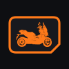
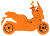
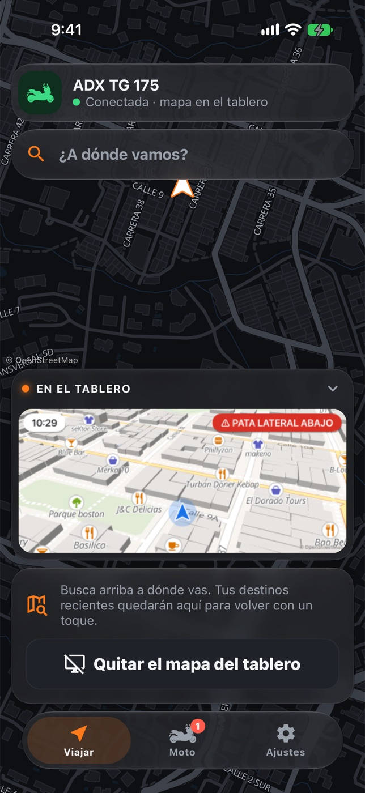
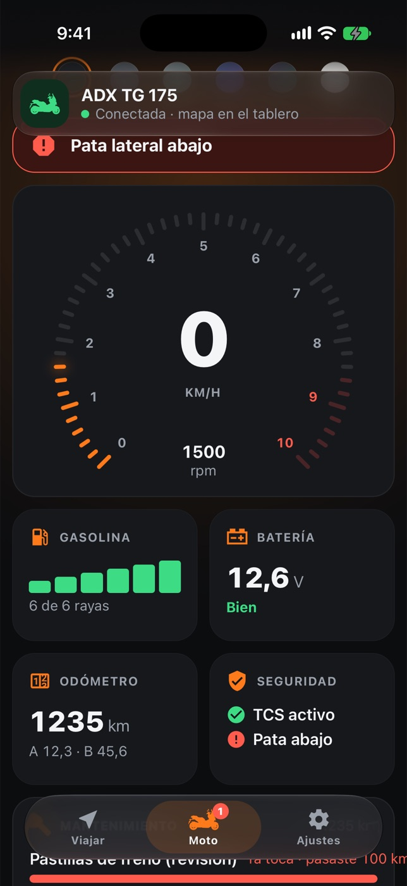
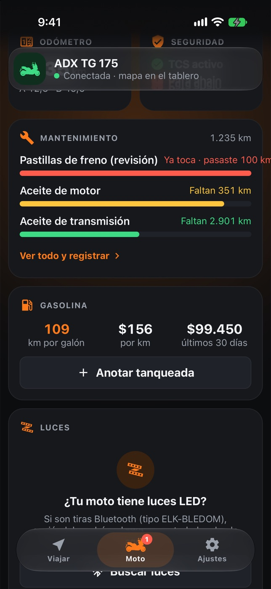

Llamadas en el tablero
Te avisa cuando te llaman. En Android, también los mensajes de las apps que elijas.

Ruta175 Muy prontoBuscas a dónde vas, arrancas, y el mapa con cada giro aparece en la pantalla de la moto. El celular va guardado. La moto no se toca.
3 días gratis para probarla. Sin tarjeta.

El mapa, la flecha y el próximo giro van en la pantalla de la moto, a la altura de tus ojos.

Ruta175 lee el tablero mientras ruedas y te lo muestra claro.

Como la app conoce el odómetro, te avisa cuándo toca cada cosa.

Te avisa cuando te llaman. En Android, también los mensajes de las apps que elijas.
Controla las tiras LED Bluetooth de la moto: color, efectos y brillo, con un toque.
Pantalla del celular en negro mientras navegas, para que la batería dure el viaje.
Botones grandes y vibraciones que confirman cada acción sin mirar la pantalla.
Tus lugares de siempre quedan a un toque para salir rápido.
La conexión con la moto es local. Tu moto, tus viajes y tus ajustes se guardan en tu celular; para buscar y calcular rutas solo se envía lo necesario.
La ADX TG 175 lo muestra en su pantalla. Solo se hace la primera vez.
El celular entra al WiFi del tablero y se reconecta cada vez que abres la app.
Elige el destino, toca Iniciar y guarda el celular. La guía va en la moto.
Sin cables, sin adaptadores y sin abrir nada de la moto.
3 díasgratis, para probarla en tu moto
Sin tarjeta y sin compromiso. Después eliges un plan de 6 meses o uno de por vida.
Abre Ruta175 y escanea el QR que muestra el tablero de la moto. El celular entra al WiFi del tablero y se reconecta solo cada vez que abres la app.
No. El tablero de la ADX TG 175 ya trae WiFi. La app se conecta a esa red; no hay cables, adaptadores ni cambios en la moto.
Con la SYM ADX TG 175 con tablero TFT. Es la única moto en la que la probamos.
Sí, en iPhone y en Android. En iPhone el tablero muestra las llamadas pero no los mensajes, porque Apple no deja que las apps lean las notificaciones de otras.
Para buscar lugares y calcular rutas, sí: la app usa tus datos. La conexión con la moto va por el WiFi del tablero y no gasta datos.
El celular dibuja el mapa que va al tablero, así que gasta más que con la pantalla apagada. El modo ahorro deja la pantalla del celular en negro mientras navegas, y en viajes largos conviene llevarlo cargando.
Sí, si son tiras LED Bluetooth (tipo ELK-BLEDOM). Las buscas una vez y luego las enciendes, cambias de color o de efecto desde la app.
Estamos terminando las pruebas en la moto. Sale primero en App Store y Google Play, con 3 días gratis para probarla.